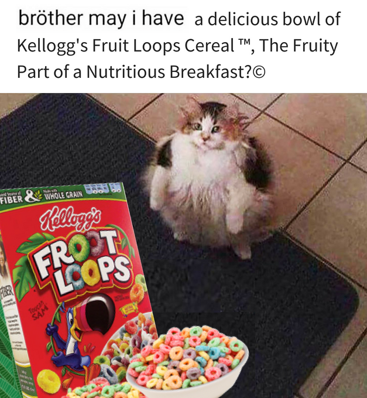
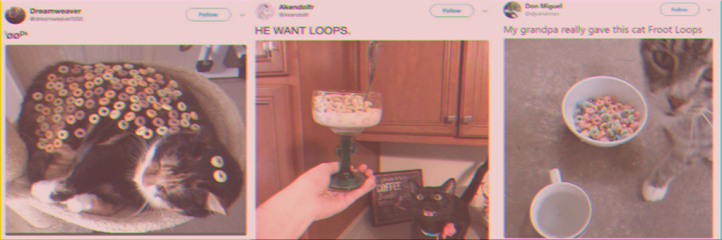

A certain type of cat meme began growing popular on Twitter in July of 2018. Most of them showed the same fat cat, who looked like she wanted some "Fruit Loops", a popular type of cereal.
 The main theme of every variation centered around cats, who seemed to yearn bowls of the breakfast cereal Fruit Loops.
Social Media was quick to catch on said trend, and multiple pictures of other user's cats interacting with Fruit Loops were put out in the public, gaining a high responce rate.
Google displays 140 000 000 results when "loop cats" is searched, making it a fairly successful Internet meme.
Return to the top of the page.